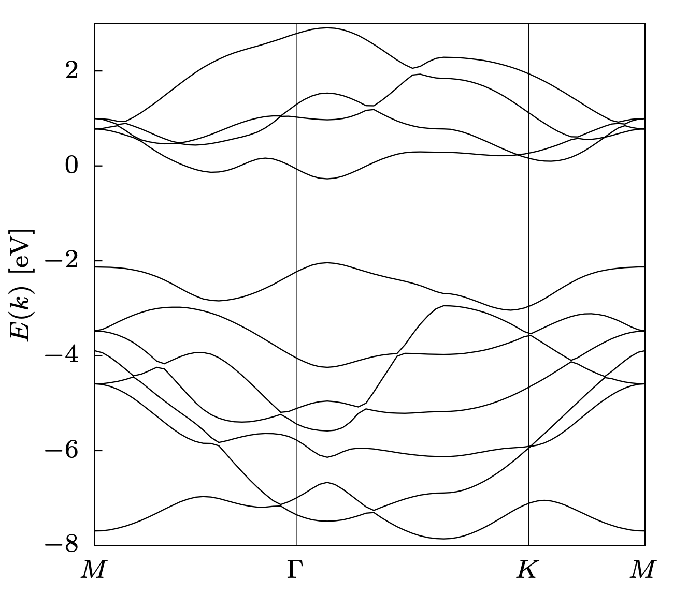

Seminarium przeddyplomowe FT sem.6
MoS2 jest fascynującym materiałem o wielu zastosowaniach, podobnie jak w grafenie, warstwowa struktura disiarczku molibdenu znacząco różni się właściwościami od tych które możemy zbadać w większych strukturach tego materiału. MoS2 jest również dobrym katalizatorem w procesie elektrolizy wody co może zostać wykorzystane w ogniwach paliwowych do produkcji wodoru. Monowarstwa disiarczku molibdenu charakteryzuje się przerwą energetyczną wynoszącą 1,8eV co pozwala na użycie go jako materiału do budowy tranzystorów czy fotodetektorów. Ponadto monowarstwy MoS2 wykazują właściwości superprzewodnictwa w temp. poniżej 9,4K.
Celem pracy jest zbadanie stabilności termodynamicznej domieszkowanego MoS2 a następnie zbadanie wpływu domieszek na jego strukturę oraz aktywność chemiczną. Celem końcowym pracy jest znalezienie i określenie domieszki MoS2 pozwalającej na adsorpcję NO2 oraz SO2 z atmosfery.

Use a spacebar or arrow keys to navigate.
Press 'P' to launch speaker console.